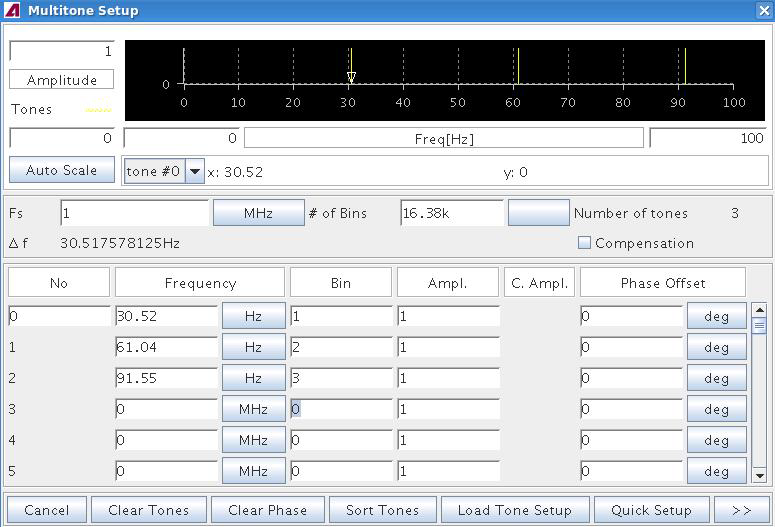
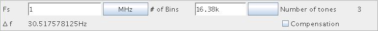

Defining the Multitone Waveform in the Frequency Domain
The following figure shows the dialog window for specifying the individual tones of the multitone waveform. The definitions already made in this window will be used as an example throughout this section.

The dialog window consists of 3 areas, each fulfilling a certain task in the multitone waveform definition.
The top area is the Tone Display which shows the spectral line of each tone you define. Zooming and scrolling functions of this area are the same as in all waveform display areas of the Signal Analyzer.
In the General Waveform Settings area you give the basic settings for the multitone waveform you wish to define.
These settings should be made before defining the individual tones. Changing the general waveform settings at a later time is possible, but will affect the tones that are already defined.

"Fs" is the sampling frequency you specify for the waveform. Although the multitone waveform to be generated will be time independent, that is, the time axis is without scale, the sampling frequency allows you to associate a frequency with every tone of the multitone waveform, in addition to the bin number (see below). This way, you can define tones either by specifying the tone frequency, or the bin number.
Δf is the minimum allowed frequency distance between two tones of the multitone waveform. Δf = Fs/(2N) is calculated automatically when entering the values "Fs" and N, where, N is the "# of bins" in the multi tone setup window shown above. Δf may also be called the tone frequency resolution.
N is the number of frequency bins ("# of bins" in the multi tone setup window shown above) used by the inverse FFT to calculate the multitone waveform in the time domain. The greater the value you select for N is, the higher is the resolution of the resulting waveform, and also the number of samples of the generated waveform.